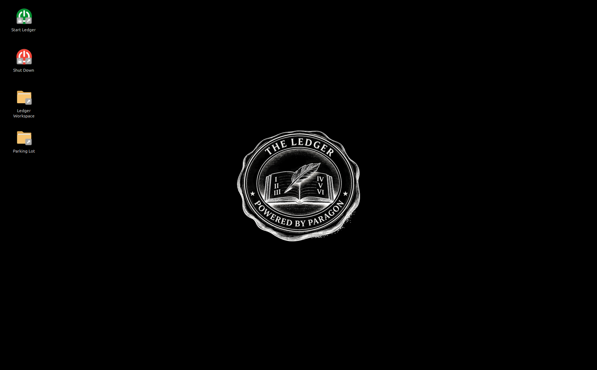
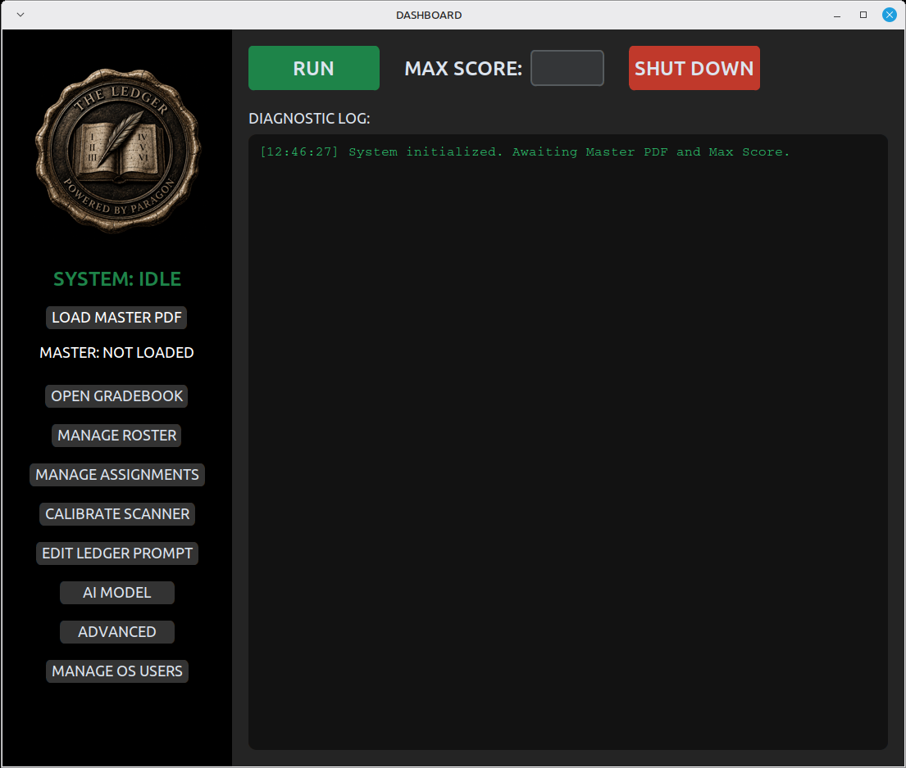
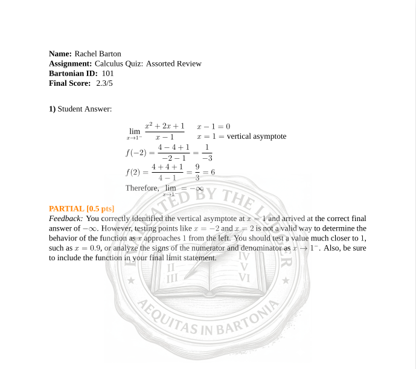
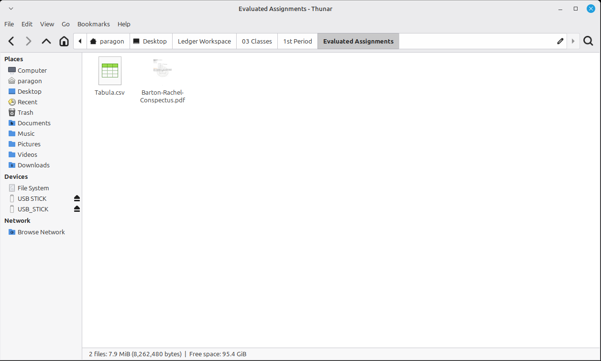
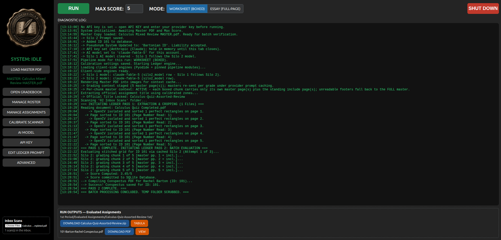
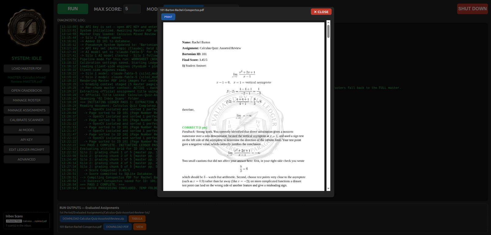
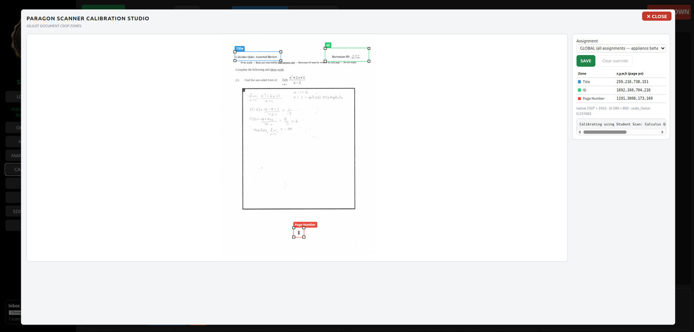

Screenless AI for the Analog Classroom
Students write on paper. The box does the rest.
Patent pending·Paragon, LLC
Students work the way they always have: pen or pencil, on paper, at a desk. The AI never meets the student, and the student never meets a screen. The technology stays on the teacher's side of the room.
There is no answer key to build and no bubbles to fill. The system reads the blank master assignment and each student's written work, then evaluates the work itself — partial credit, written feedback, and a score, the way a teacher would.
Students exist outside the building only as pseudonymous ID numbers. Names live in a local roster that never leaves the machine. What the AI sees is handwriting and a number — never who wrote it.
The teacher prints an assignment, students write on it, and the stack goes through an ordinary document scanner. From there the Ledger takes over.
Only the Score step touches the cloud. Everything else happens on the machine in the room.




The browser version runs the identical evaluation pipeline entirely inside the teacher's browser — nothing to install, no student data on any server. It is available now to pilot districts.



The privacy boundary is not a policy — it is the architecture. Exactly four kinds of images ever go to the AI:
The unused assignment, exactly as printed. No student has touched it.
A sliver of the page header naming the assignment.
The handwritten pseudonymous ID number. A number — not a name.
The answer boxes themselves, isolated from the rest of the page.
Whole pages are sent only in essay mode — and even then under a pseudonymous ID, never a name. On the appliance, the machine itself is hardened: encrypted drive, FIDO hardware key to unlock, USB guard. If the box walks away, the data doesn't.
Open source · AGPL-3.0
The complete appliance software — the same code that has scored real batches — is published under the AGPL-3.0 license, built for Debian 13, for district IT departments to examine and evaluate on their own hardware. The six verified evaluation prompts ship with it.
View the repository →The public release is experimental and is provided for IT professionals to evaluate. It is not for use with real student data.
Pilot program
The browser version brings the same pipeline to district-managed devices with nothing to install: the district's own AI key, evaluation running in the teacher's browser, and no student data on any server — including ours.
Pilot program open — contact us.
ledgermachine1@gmail.comMr. Barton has taught chemistry in Missouri public schools for twenty years. He currently serves as Science Chair at a KC Metro area high school.
The Ledger system has since scored thousands of student artifacts — real assignments, real students, real feedback — and is in use today in two Missouri districts, including a formal district pilot.
The Ledger is offered through Paragon, LLC of Independence, Missouri.